UD11: APLICACIONES WEB HÍBRIDAS¶
INTRODUCCIÓN¶
En la industra del desarrollo software es común reutilizar funcionalidades y servicios desarrollados por terceros, así como la utilización de fuentes públicas de datos que podamos incorporar a nuestra aplicación/sistema.
En esta unidad vamos a revisar diferentes posibilidades con las que podemos enriquecer nuestras aplicaciones web con datos y funcionalidades de terceros: por una parte, haremos una introducción al web scraping como forma de recolectar determinados datos disponibles en formato web; por otra parte, revisaremos diferentes servicios de diferentes plataformas que nos permitirán automatizar operaciones tales como envío de e-mails, gestión de ficheros estáticos, pasarelas de pago, etc.
EVALUACIÓN¶
El presente documento, junto con sus correspondiente boletín de actividades (publicado adicionalmente), cubren los siguientes criterios de evaluación:
| RESULTADOS DE APRENDIZAJE | CRITERIOS DE EVALUACIÓN |
|---|---|
| RA4. Desarrolla aplicaciones Web embebidas en lenguajes de marcas analizando e incorporando funcionalidades según especificaciones. | f) Se han utilizado herramientas y entornos para facilitar la programación, prueba y depuración del código. |
| RA9. Desarrolla aplicaciones Web híbridas seleccionando y utilizando librerías de código y repositorios heterogéneos de información. | a) Se han reconocido las ventajas que proporciona la reutilización de código y el aprovechamiento de información ya existente. b) Se han identificado tecnologías y frameworks aplicables en la creación de aplicaciones web híbridas. c) Se ha creado una aplicación web que recupere y procese repositorios de información ya existentes. d) Se han creado repositorios específicos a partir de información existente en almacenes de información. e) Se han utilizado librerías de código y frameworks para incorporar funcionalidades específicas a una aplicación web. |
WEB SCRAPING¶
Internet representa una vasta y valiosa fuente de datos en numerosas áreas de interés. Existen diferentes posibilidades a través de las cuales recolectar datos a través de Internet:
-
Juegos de datos ya existentes:
- Públicos: existen numerosos conjuntos de datos ya preparados para entrenar diferentes algoritmos de Inteligencia Artificial. Puedes encontrar algunos de estos ejemplos en este enlace.
- Compra de juegos de datos: en numerosas plataformas es posible comprar juegos de datos sobre diversas temáticas: consumo, medioambiente, política... Un ejemplo lo puedes encontrar en este enlace.
- Datos corporativos: son los datos transaccionales o agregados, generados por la propia actividad privada de una empresa u organización.
-
Creación de juegos de datos:
- Generación de datos: mediante la creación de encuestas, o la utilización de servicios como AmazonTurk, que permiten contratar personal para tareas como etiquetado de datos y clasificación.
- Recolección de datos existentes: mediante servicios API REST.
En la unidad anterior vimos cómo recuperar datos de diversas API REST, diseñadas para tal efecto, pero, ¿qué ocurre si existen sitios web que no proporcionen un servicio web similar?
Para estos casos se puede utilizar Web Scraping, que se trata de una técnica consistente en extraer datos del código HTML de los sitios web. Antes de aplicar esta técnica a un sitio web, es necesario tener en consideración determinados factores:
-
Legales
- ¿Se incumple algún reglamento nacional/regional?
- ¿Se incumplen los "Términos y condiciones" del sitio web?
- ¿Se está accediendo a lugares no autorizados?
- ¿Es legal el uso que se le dará a los datos?
-
Éticos
- Robots.txt: es un fichero con información para que los motores de búsqueda no indexen determinadas páginas de un sitio web. Para acceder a este fichero, se añade "/robots.txt" al final de un determinado dominio, de la forma "dominio.com/robots.txt". Aquí se detallan aspectos como si se permite/deniega acceso total o parcial, frecuencia de consultas (crawl-delay), el sitemap (para facilitar la navegación por el sitio), etc. Para más información, consulta este enlace. No respetar las normas establecidas en este fichero puede acarrear consecuencias legales.
En caso de dudas sobre si se puede aplicar esta técnica a un determinado sitio web, el mejor consejo es contactar con la empresa/organización y preguntar.
Tipos de sitios web¶
Existen diferentes casuísticas que nos podemos encontrar cuando tratamos de aplicar Web Scraping en un sitio web, dependiendo del paradigma en que esté basado el sitio web en cuestión:
-
HTML pre-renderizado o sitios web estáticos: se trata de sitios web cuyo código HTML se envía desde el servidor (backend), ya sea porque se trata de un sitio web estático, porque se utilizan frameworks con sistemas de plantillas (Laravel, CodeIgniter, Django...) que embeben código de servidor en HTML, o también porque se utiliza la técnica de SSR en aplicaciones web reactivas (Vue, React, Angular...). En este caso el HTML se obtiene al hacer una petición HTTP, y se pueden utilizar librerías como BeautifulSoup4 o Scrapy.
-
Single Page Application (SPA): consiste en un fichero HTML simple con código JavaScript asociado. Durante la navegación, el navegador web ejecuta el código JavaScript y modifica dinámicamente el código HTML para liberar al servidor de esta tarea. Los datos se descargan mediante peticiones HTTP a servicios REST que residen en el servidor, actualizándose solo la parte del HTML que se necesita, sin originar un refresco de toda la página web. Al hacer una petición HTTP, lo que se obtiene es el HTML simple y no los datos que se visualizan en pantalla (ya que es el código JavaScript, en el lado cliente, quien modifica el HTML, tras hacerse la petición HTTP). En este caso existen dos aproximaciones para Web Scraping:
- Utilizar una herramienta como Selenium, para simular un navegador web que accede al sitio web, y así poder ejecutar el código JavaScript que genere el código HTML. Selenium se trata realmente de un entorno de pruebas para aplicaciones web, aunque su uso ha derivado también hacia el Web Scraping. Además de para SPAs, Selenium también se puede utilizar para los sitios web de la tipología anterior.
- Inspeccionar las peticiones HTTP que se realizan al backend para descubrir los endpoints, y así poder realizar peticiones HTTP directamente a esos endpoints y recuperar los datos en formato JSON (generalmente).
Además de estas consideraciones, será necesario establecer si se requiere algún tipo de autenticación al realizar la petición HTTP.
Ejemplos de Web Scraping¶
A continuación vamos a desarrollar dos ejemplos de Web Scraping, uno con BeautifulSoup4, y otro con Selenium. Para ello, previamente deberemos instalar en nuestro entorno virtual los correspondientes paquetes:
pip install beautifulsoup4
pip install selenium
Fake jobs - BeautifulSoup4¶
En este ejemplo vamos a extraer determinados datos de una web con ofertas de trabajo falsas. La URL de la cual vamos a extraer estos datos es:
https://realpython.github.io/fake-jobs/
Y los datos de cada oferta son:
- Título
- Compañía
- Ubicación
Una vez tenemos claro los datos que necesitamos extraer, así como la URL donde encontrar dichos datos, deberíamos plantearnos si se incumple algún tipo de norma tanto legal como ética (según las consideraciones mencionadas en el apartado introductorio). Al tratarse de un sitio de pruebas específicamente diseñado para practicar Web Scraping, no tenemos ningún impedimento para continuar con las pruebas.
Como segundo paso a realizar (previo a la programación del script o bot), es esencial analizar la estructura del sitio web del que queremos descargar los datos. Para ello, debemos inspeccionar el código HTML con el navegador que estemos utilizando. En el caso de Google Chrome, pulsamos botón derecho del ratón sobre el elemento a inspeccionar, y pulsamos sobre "Inspeccionar", tras lo cual nos aparecerán las herramientas de desarrollador, sobre la pestaña "Elementos", y apuntando directamente al elemento sobre el que habíamos pulsado el botón derecho del ratón:
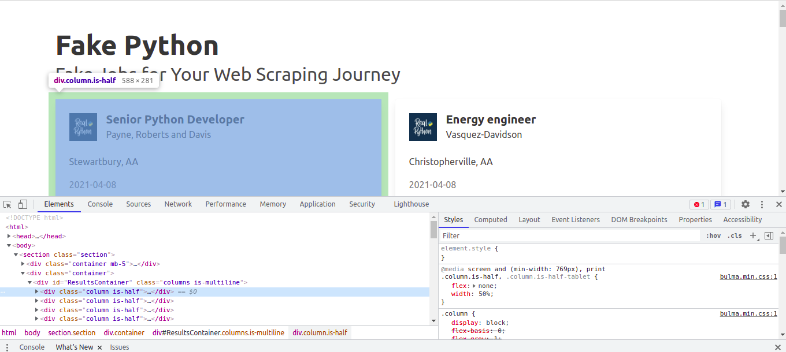
Volveremos a esta estructura más adelante, pero ahora vamos a introducir las primeras instrucciones de código:
import requests
from bs4 import BeautifulSoup
URL = "https://realpython.github.io/fake-jobs/"
page = requests.get(URL)
soup = BeautifulSoup(page.content, "html.parser")
El segundo parámetro "html.parser" indica el tipo de parser que se va a utilizar. Un parser servirá para poder distinguir entre los distintos elementos de un documento basado en lenguaje de marcas (HTML en este caso) para poder así navegar por ellos posteriormente. En el caso de BeautifulSoup, podemos encontrar tres tipos:
- html.parser: se trata del parser que viene por defecto instalado en la librería estándar de Python.
- lxml: combina características de XML y se caracteriza por su rapidez.
- html5lib: se caracteriza por interpretar el HTML del mismo modo que un navegador web.
En general, utilizaríamos lxml cuando necesitásemos rapidez. Además, para versiones de Python igual o anteriores a la 3.2.2, se recomienda usar lxml o html5lib. Para saber más sobre las diferencias de estos parsers, se puede consultar este enlace.
Encontrar elementos por ID¶
Tras inspeccionar el código HTML según se ha descrito anteriormente, vemos que las ofertas de trabajo están contenidas en elementos div con clase \"card\", a su vez contenido en un div con clases \"column is-half\". Todos estos elementos div están a su vez contenidos en un elemento div con el atributo id con valor \"ResultsContainer\". Por tanto, éste es el primer elemento a partir del cual empezar la búsqueda:
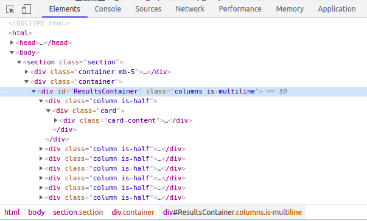
La instrucción para realizar esto será:
results = soup.find(id="ResultsContainer")
Si quisiésemos ver de forma "amigable" el HTML obtenido, podemos utilizar la siguiente instrucción:
print(results.prettify())
Encontrar elementos por etiqueta y clase¶
Una vez hemos acotado la parte del documento que contiene los datos que nos interesan, vamos a localizar exactamente dónde se encuentran dichos datos:
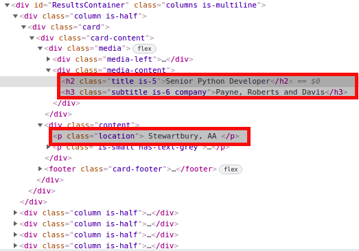
Por tanto, se puede apreciar que los datos que necesitamos se encuentran dentro de un elemento div con clase "card-content". Para poder recuperar todos los elementos con esta clase, utilizamos la siguiente instrucción:
job_elements = results.find_all("div", class_="card-content")
Con el método find_all vamos a obtener un iterable que podremos recorrer con un bucle:
for job_element in job_elements:
title_element = job_element.find("h2", class_="title")
company_element = job_element.find("h3", class_="company")
location_element = job_element.find("p", class_="location")
print(title_element)
print(company_element)
print(location_element)
print()
NOTA: Si hubiésemos utilizado el método find en lugar de find_all, solo habríamos recuperado el primero de los elementos del árbol con las características especificadas.
Por cada job_element (que también es un objeto de BeautifulSoup) dentro de job_elements, buscaremos diferentes elementos (h2, h3 y p) con sus correspondientes clases (title, company y location). A continuación imprimimos sus valores, y una línea en blanco al final de cada bloque.
La salida del bucle tiene la siguiente apariencia:
<h2 class="title is-5">Senior Python Developer</h2>
<h3 class="subtitle is-6 company">Payne, Roberts and Davis</h3>
<p class="location">Stewartbury, AA</p>
Para redondear esta primera prueba, vamos a extraer el texto de los elementos anteriores mediante la función get_text(), y el resultado lo concatenaremos con la función strip() para extraer los posibles espacios en blanco. Con lo que el script quedaría del siguiente modo:
import requests
from bs4 import BeautifulSoup
URL = "https://realpython.github.io/fake-jobs/"
page = requests.get(URL)
soup = BeautifulSoup(page.content, "html.parser")
results = soup.find(id="ResultsContainer")
job_elements = results.find_all("div", class_="card-content")
for job_element in job_elements:
title_element = job_element.find("h2", class_="title")
company_element = job_element.find("h3", class_="company")
location_element = job_element.find("p", class_="location")
print(title_element.get_text().strip())
print(company_element.get_text().strip())
print(location_element.get_text().strip())
print()
Para lanzar este script, lo guardamos primero en un fichero con extensión .py (por ejemplo fake_jobs_scraping.py), seguidamente activamos el entorno virtual desde el terminal, y lo ejecutamos de la forma:
(venv) usuario: python /"ruta hasta el fichero"/fake_jobs_scraping.py
(venv) usuario: python fake_jobs_scraping.py
Datos de criptomonedas - Selenium¶
Como se ha comentado anteriormente, Selenium se utiliza, en el entorno de Web Scraping, cuando se intenta descargar datos de una aplicación web y se necesita realizar determinadas acciones antes de que se cargue la página web (por ejemplo, pulsar sobre un botón).
En este apartado vamos a utilizar Selenium para extraer datos sobre criptomonedas, de este sitio web.
Análisis del sitio web¶
La primera consideración a tener en cuenta es la estructura de la página web. Hemos de estudiarla previamente para poder programar las acciones que Selenium ha de llevar a cabo.
Para poder realizar estas acciones, deberemos utilizar las funcionalidades de Selenium que nos permitirán pulsar sobre los elementos de la página web, y para poder hacer esto tendremos que esperar a que los elementos estén disponibles en el DOM. Con este fin realizaremos las siguientes importaciones a nuestro script, que nos permitirán esperar hasta que los elementos del DOM permitan realizar determinadas acciones sobre ellos:
from selenium import webdriver
from bs4 import BeautifulSoup
from selenium.webdriver.chrome.service import Service
from selenium.webdriver.support.ui import WebDriverWait
from selenium.webdriver.support import expected_conditions as EC
from selenium.webdriver.common.by import By
from time import sleep
Configuración del scraper¶
En primer lugar, la instalación del paquete selenium en el entorno virtual (como vimos al principio de este apartado) no será suficiente para poder manejar el navegador: deberemos instalar el driver correspondiente para que, a través de él, se pueda manejar el navegador mediante código Python.
Este driver ha de ser instalado en el host donde tenemos instalado el entorno virtual. Para esto instalamos el siguiente paquete en el entorno virtual:
https://pypi.org/project/chromedriver-autoinstaller/
En segundo lugar, haremos las importaciones correspondientes y configuraremos el webdriver para que el navegador se ejecute en un segundo plano y no se muestre por pantalla. Además, guardaremos la URL de la que queremos obtener los datos:
from selenium import webdriver
from bs4 import BeautifulSoup
from selenium.webdriver.chrome.service import Service
from selenium.webdriver.support.ui import WebDriverWait
from selenium.webdriver.support import expected_conditions as EC
from selenium.webdriver.common.by import By
from time import sleep
import chromedriver_autoinstaller
URL = 'https://coinmarketcap.com/en/'
chromedriver_autoinstaller.install()
chrome_options = webdriver.ChromeOptions()
# chrome_options.add_argument("--headless")
chrome_options.add_argument("--window-size=1920,1200")
browser = webdriver.Chrome(options=chrome_options)
browser.get(URL)
Copia todas estas instrucciones a un nuevo archivo llamado coinmarketcap_scraper.py.
Una posible lista de todas las opciones que se pueden configurar para el navegador se listan en este enlace.
NOTA: Se ha comentado la opción "headless", que esconde la ejecución del navegador para poder comprobar las operaciones que realiza y poder entender cualquier error que suceda en la ejecución de los pasos. Una vez se depure el script, podemos descomentar esta línea para que el navegador no se muestre. Mientras tanto, mostraremos el navegador con un tamaño 1920 x 1200, así se mostrará en un tamaño suficientemente grande como para que no se contraigan los menús (por ser una página adaptativa, o responsive), lo cual nos cambiaría la estructura del DOM, y que tendríamos que tener también en consideración en nuestro script.
Aceptación de cookies¶
Lo primero que vamos a programar es la aceptación del mensaje de cookies. Aunque en este sitio web no entorpece la navegación, lo vamos a hacer a modo ilustrativo. Cuando entramos por primera vez al sitio web (o en modo incógnito), se muestra el mensaje de aceptación de cookies. Si examinamos el botón de "Accept All Cookies" podemos analizar sus características:
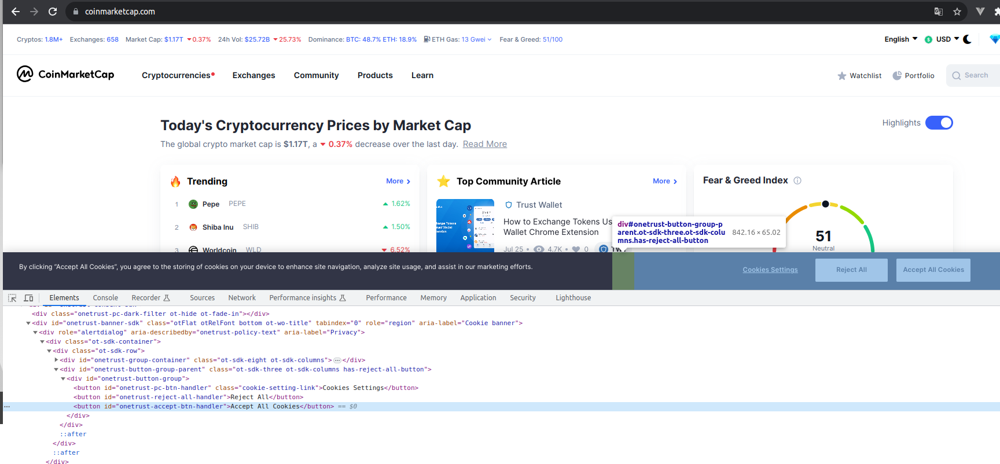
Vemos que este elemento button tiene un id con valor "onetrust-accept-btn-handler". Esto nos va a servir para poder identificarlo, con las siguientes instrucciones:
accept_cookies_button = WebDriverWait(browser, 10).until(EC.element_to_be_clickable((By.ID, "onetrust-accept-btn-handler")))
Con esta instrucción, le decimos al navegador que espere 10 seguntos como máximo hasta que que elemento con el id especificado esté en condiciones de poder ser pulsado. Para simular el pulsados sobre el botón, añadimos la siguiente instrucción:
accept_cookies_button.click()
Añade estas dos instrucciones al archivo coinmarketcap_scraper.py, y lo ejecutamos con el entorno virtual activado:
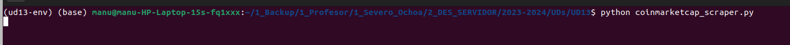
Tras ejecutar este comando verás el navegador Chromium aparece y se ejecutan las acciones programadas, y se cierra el navegador. Si quieres apreciar mejor las acciones que se realizan, añade la siguiente línea al final del script, para que el navegador tarde 10 segundos más en cerrarse y apreciar mejor lo que ha pasado:
sleep(10)
Esconder Highlights¶
Pretendemos esconder el bloque de Highlights que se muestra al entrar a la página web. Esto se consigue pulsando sobre el switch resaltado en la siguiente captura:
Para saber el elemento del DOM con el que hemos de interactuar, hemos de inspeccionarlo y analizar sus características, para poder diferenciarlo del resto de los elementos:
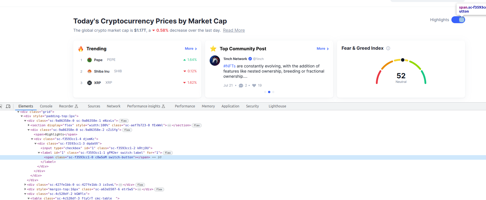
Vemos que se trata de un elemento span con tres clases asociadas, una de ellas llamada "switch_button". Si inspeccionamos todo el código HTML, vemos que no existe ningún otro elemento que tenga asociada esta clase, por tanto el nombre de la clase se trata de un candidato perfecto para identificar a este botón de forma única.
Vamos a añadir las siguientes instrucciones en el fichero, antes de la instrucción sleep (que será la última):
switch_button = WebDriverWait(browser, 5).until(EC.element_to_be_clickable((By.CLASS_NAME, "switch-button")))
switch_button.click()
Se trata prácticamente de la misma instrucción que para el botón de aceptación de cookies, salvo que buscamos el elemento por su ID.
Ejecutamos de nuevo el script y observamos las acciones.
Hasta este punto, hemos utilizado dos atributos de la clase By, para localizar elementos dentro de la página: ID y CLASS_NAME.
Pero hay más atributos y estrategias. Vamos a profundizar un poco más mediante el siguiente enlace para conocer más posibilidades de búsqueda.
Cambio del idioma¶
La siguiente acción que queremos automatizar es el cambio del idioma. Para ello, hemos de pulsar en el desplegable de búsqueda de idioma, introducir las primeras letras (o el nombre completo) del idioma que queremos seleccionar y, cuando aparezca en el desplegable, pulsar sobre él:
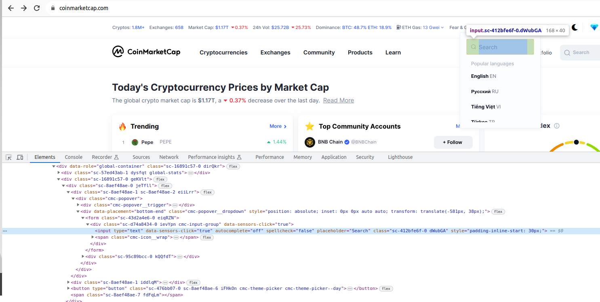
Hemos encontrado el elemento input en el que queremos introducir el nombre del idioma al que queremos cambiar. Analizando el comportamiento de forma manual, vemos que este desplegable solo se muestra si pulsamos sobre la opción de cambio de idioma (que toma por defecto el idioma de tu navegador).
Por tanto, la primera opción será la de encontrar la opción de cambio de idioma en la barra de navegación superior, y pulsar sobre esta opción para que se despliegue la búsqueda de idioma.
Vamos a examinar el elemento del que estamos hablando:
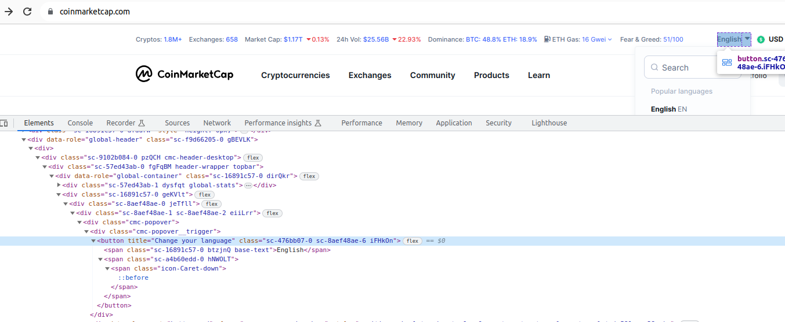
Comprobamos que se trata de un elemento button, con un título (en el idioma por defecto del navegador) y unas determinadas clases que no son identificativas. Dado esto, vamos a anclar la búsqueda a partir del elemento por encima del botón, el div con clase "cmc-popover__trigger", y a partir de ahí elegimos el elemento button inmediatamente inferior. Pero, ¿cómo hacemos esto si hasta el momento solo sabemos buscar por ID o clase? Lo llevaremos a cabo con una expresión XPath. Si estás familiarizado con XPath te será más fácil entender el ejemplo, si no lo estás, aquí tienes un resumen.
De lo que se trata es de, mediante una expresión XPath, encontrar el elemento button en cuestión a través del árbol del documento HTML. Tenemos varias posibilidades:
1. Partir del elemento raíz html, e ir descendiendo uno a uno en los elementos del arbol, con algo parecido a:
/html/body/div/div/div/div/div/div/div/div/div/div/div/div/div/div/form/div/input
Esto es una poca poco robusta de desarrollar nuestro script, ya que si los desarrolladores cambian algún detalle de esta estructura, se puede invalidar nuestro script.
2. Como no queremos hacer algo tan tedioso como lo de arriba, vamos a utilizar rutas relativas de XPath.
Éstas son las instrucciones que nos van a permitir encontrar el botón de cambio de idioma, y pulsar sobre él, con la expresión XPath resaltada:
language_button = WebDriverWait(browser, 5).until(EC.element_to_be_clickable((By.XPATH, "//div[@class='cmc-popover__trigger']/button")))
language_button.click()
Ahora hemos de controlar la lista de idiomas que se desplega al pulsar sobre el botón anterior. Examinamos de nuevo el HTML:
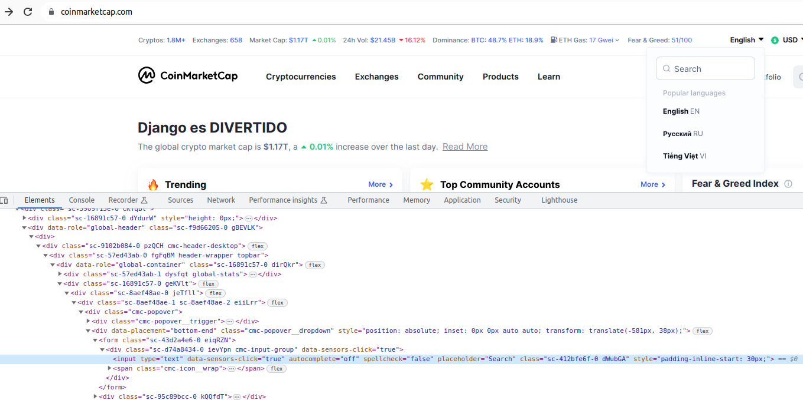
Vemos que el elemento que nos permite buscar un idioma particular es un input. Cuando lo desplegamos, es el único input que existe en la barra de navegación superior, con lo cual podemos tomar el div con clase "topbar" y buscar dentro de él un input, de esta forma:
topbar = browser.find_element(By.CLASS_NAME, 'topbar')
language_input = topbar.find_element(By.XPATH, ".//input")
topbar = browser.find_element(By.CLASS_NAME, 'topbar')
language_input = WebDriverWait(topbar, 5).until(EC.presence_of_element_located((By.XPATH, ".//input")))
Ahora solo nos queda hacer una búsqueda del idioma, y para ello utilizamos el método send_keys con el elemento input, de la forma (elegimos el alemán como idioma):
language_input.send_keys(\"Deutsch\")
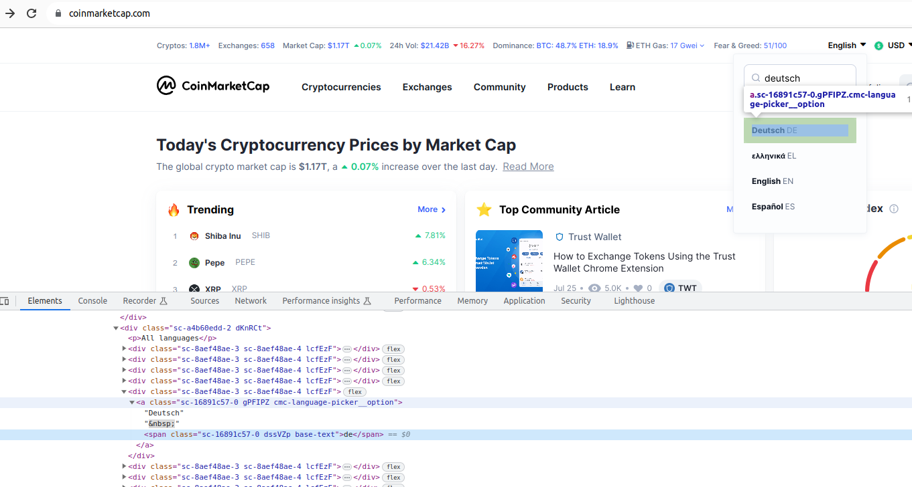
Por tanto, solo nos queda pulsar sobre el enlace que contiene el texto "Deutsch". Para ello, utilizamos otro criterio de búsqueda de la clase By, llamado PARTIAL_LINK_TEXT (establecemos una espera, para mayor seguridad), y el código de cambio de idioma resultante es el siguiente:
language_button = WebDriverWait(browser, 5).until(EC.element_to_be_clickable((By.XPATH, "//div[@class='cmc-popover__trigger']/button")))
language_button.click()
topbar = browser.find_element(By.CLASS_NAME, 'topbar')
language_input = WebDriverWait(topbar, 5).until(EC.presence_of_element_located((By.XPATH, ".//input")))
language_input.send_keys("Deutsch")
deutsch_option = WebDriverWait(browser, 5).until(EC.element_to_be_clickable((By.PARTIAL_LINK_TEXT, 'Deutsch')))
deutsch_option.click()
Probamos el script resultante en clase y comprobamos que se cambia el idioma correctamente.
Descarga de los 30 que más ganan¶
Ya hemos llevado a cabo operaciones básicas de navegación del sitio web. Ahora vamos a empezar a descargar datos, en concreto las 30 criptomonedas que más están ganando en estos momentos.
Se puede apreciar que los datos que necesitamos no se encuentran en la página de bienvenida:
Es necesario pulsar sobre la opción de menú Cryptocurrencies y después sobre Gainers & Losers:
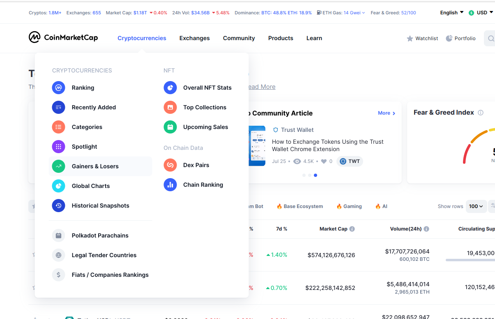
A continuación se muestran 2 bloques: uno con las 30 primeras cryptomonedas que más ganan, y 30 con las que más pierden:
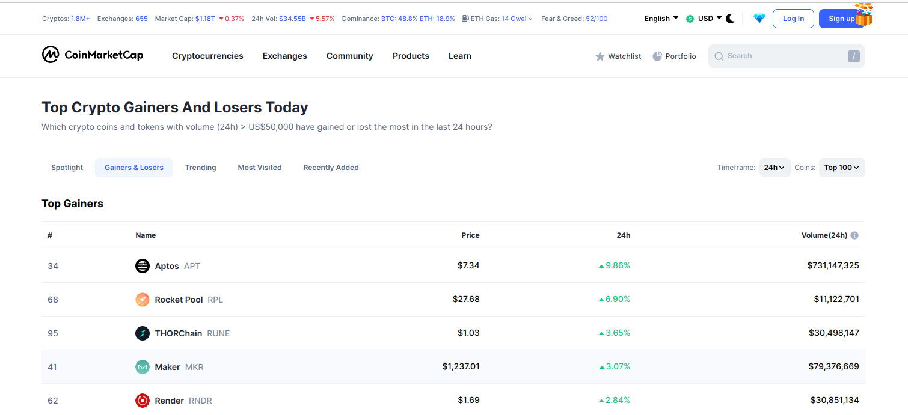
A continuación tendremos que pulsar sobre la opción de menú correspondiente. Sabremos cuál es esta opción inspeccionando el HTML de la página:
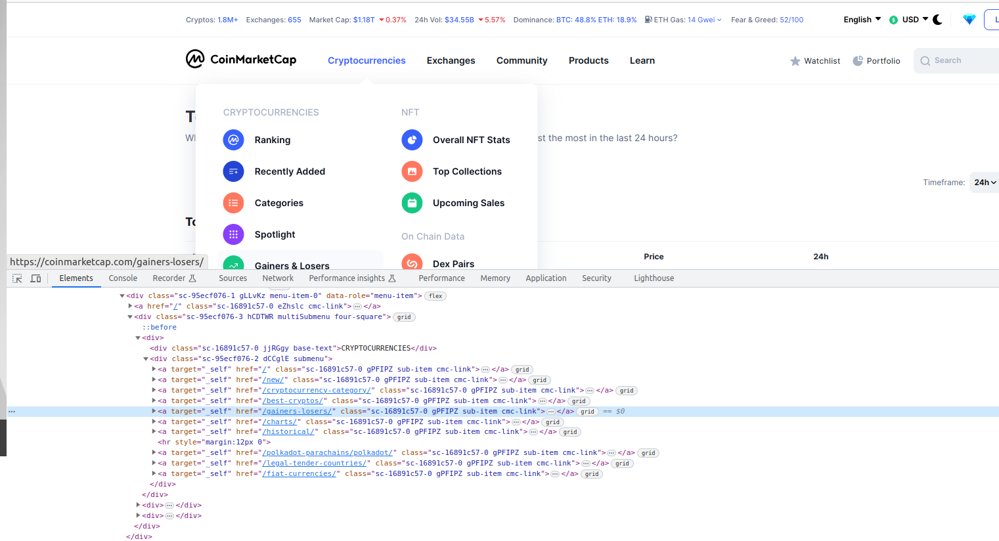
Vemos que se trata de un enlace cuyo atributo href contiene el valor /gainers-losers/, por lo que lo más fácil será navegar directamente a esta URL:
url_gainers_losers = 'https://coinmarketcap.com/gainers-losers/'
browser.get(url_gainers_losers)
Si examinamos el código de esta página web del sitio web, veremos que existen dos bloques diferenciados, uno para los que más ganan, y otro para los que más pierden, en forma de tablas:
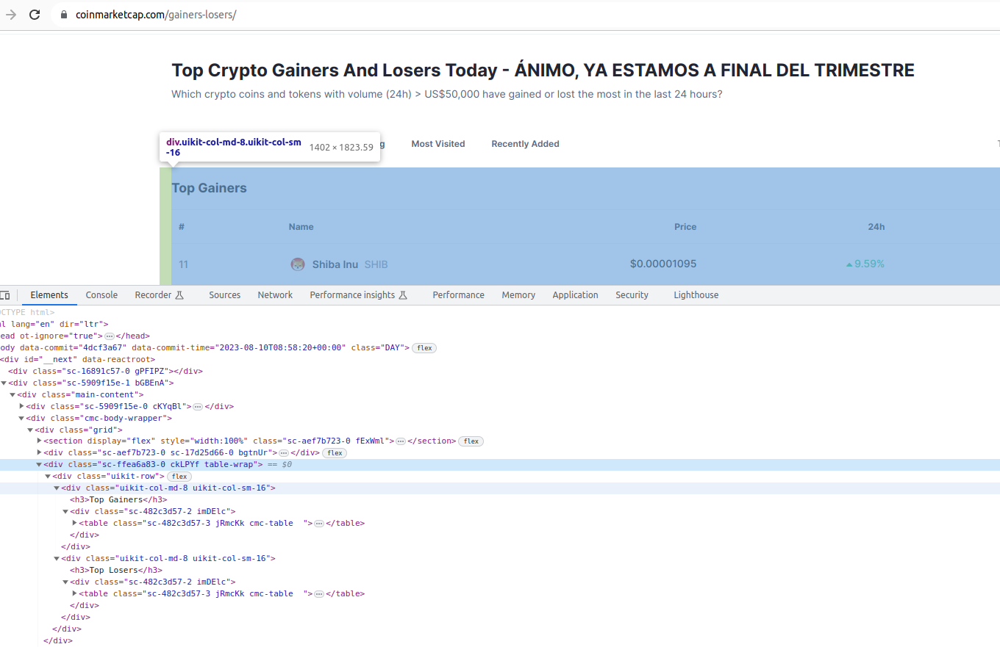
Podemos apreciar que no existe forma de diferenciar los dos bloques, por algún ID o clase particular, con lo cual nos vamos a basar en tomar la primera de las dos tablas que encontremos.
Esto lo podemos realizar en dos pasos, para más seguridad. Primero esperamos a que el elemento que envuelve a las dos tablas (con clase "table-wrap") esté presente en el documento, utilizando un wait. A continuación, simplemente utilizamos la función find_elements dentro del elemento envolvente (no necesitamos wait porque el elemento envolvente ya está presente), y tomamos el primero de los elementos que nos devuelve esta función utilizando la notación de corchetes [0]:
table_wrap = WebDriverWait(browser, 5).until(EC.presence_of_element_located((By.CLASS_NAME, "table-wrap")))
tables = table_wrap.find_elements(By.XPATH, ".//table")
table_gainers = tables[0]
Por último, accedemos a las filas de la tabla con un bucle, e imprimimos algunos campos de cada fila en forma de texto:
rows = table_gainers.find_elements(By.XPATH, ".//tbody/tr")
for row in rows:
cells = row.find_elements(By.XPATH, ".//td")
row_text = (cells[0].text + ' - ' + cells[1].text + ' - ' + cells[3].text).replace("\n", "")
print(row_text)
La salida del script ha de mostrar un resultado parecido al siguiente (dependiendo del momento en el que se ejecute):
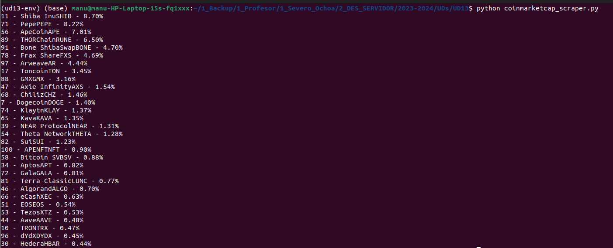
Conversión a dataframe de pandas¶
Queremos convertir los datos de la tabla de las criptomonedas que más ganan, del apartado anterior, a un dataframe de pandas.
Pandas es una librería muy útil en el ámbito de Big Data, Inteligencia artificial e inteligencia de negocios. Sirve como herramienta para el análisis y manipulación de datos. El objeto mediante el cual pandas realiza operaciones se llama dataframe, consistente en una representación tabular de la información (a modo de tabla u hoja de cálculo).
Para poder utilizar pandas con los datos que hemos extraído necesitamos hacer previamente una serie de instalaciones. Primero instalamos pandas y los parsers lxml y html5 en nuestro entorno virtual, si no los tenemos ya:
pip install pandas
pip install lxml
pip install html5lib
Vamos a convertir el elemento de selenium almacenado en la variable table_gainers a un dataframe de pandas, convirtiéndolo primero a un objeto de BeautifulSoup como paso intermedio, con las siguientes líneas (podemos comentar el bucle del apartado anterior):
table_gainers_bs = BeautifulSoup(table_gainers.get_attribute('outerHTML'), 'html.parser')
dataframe = pd.read_html(str(table_gainers_bs))[0]
print(dataframe)
Y el resultado es el siguiente:
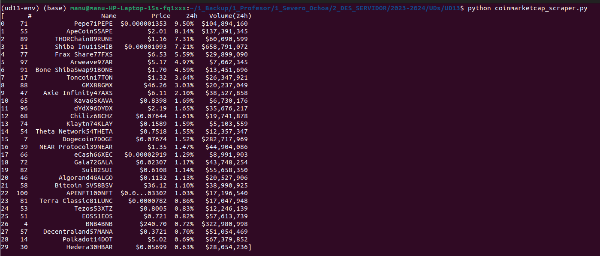
Mediante el dataframe de pandas vamos a operar mucho mejor con estos datos y vamos a poder realizar determinadas operaciones de forma más rápida y eficiente. Aquí tienes una breve introducción. Durante el resto de este apartado vamos a realizar unas sencillas manipulaciones al dataset creado.
En primer lugar, vemos que al imprimir el dataset, los resultados no parecen ordenados según un sentido lógico. Lo que realmente nos gustaría sería ordenarlos de forma descendente por el porcentaje de ganancias en las últimas 24 horas. Esto se realiza fácilmente mediante la siguiente instrucción:
dataframe = dataframe.sort_values(by=["24h"], ascending=False)
Imprimimos por consola la nueva versión del dataframe, y al ejecutar el script obtenemos este resultado:
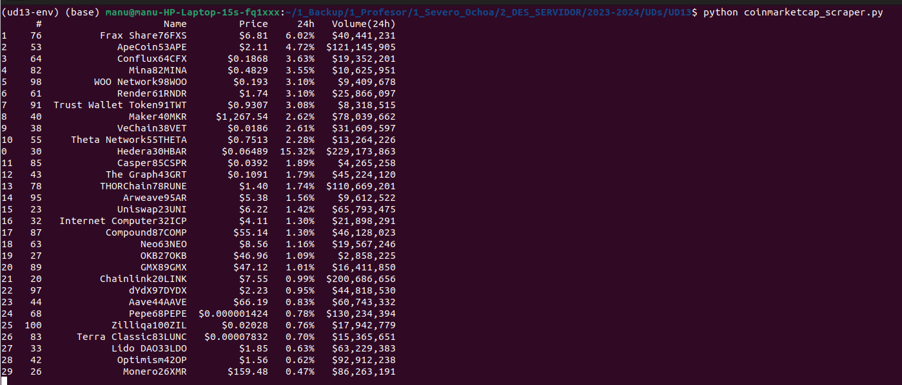
Vemos que, efectivamente, se han ordenado las filas del dataframe, pero no exactamente como nostros querríamos. Resulta que los datos de la columna "24h" representan un texto, y pandas ha ordenado los datos como texto, no como una fracción decimal.
Por tanto, necesitamos convertir la columna "24h" a un número decimal, y hemos de eliminar el signo porcentual al final. Esto lo vamos a conseguir, por ejemplo, con los sigiuentes dos pasos: guardamos los valores de la columna "24h", transformados ya a un número decimal; a continuación, insertamos esos valores procesados como una nueva columna, en tercer lugar (índice 2):
column_24h = dataframe["24h"].str.rstrip("%").astype('float')
dataframe.insert(loc = 2, column = "24h(%)", value = column_24h)
Estamos creando una nueva columna, llamada \"24h(%)\", de tipo decimal. Podemos borrar también la columna \"24h\" de la forma, porque ya no la necesitamos:
dataframe = dataframe.drop("columns=["24h"])
Y, finalmente, ordenarlo todo por la nueva columna. Podemos concatenar el borrado de la columna con la ordenación de la nueva, quedando:
column_24h = dataframe["24h"].str.rstrip("%").astype('float')
dataframe.insert(loc = 2, column = "24h(%)", value = column_24h)
dataframe = dataframe.drop(columns=["24h"]).sort_values(by=["24h(%)"], ascending=False)
print(dataframe)
El resultado será el siguiente:
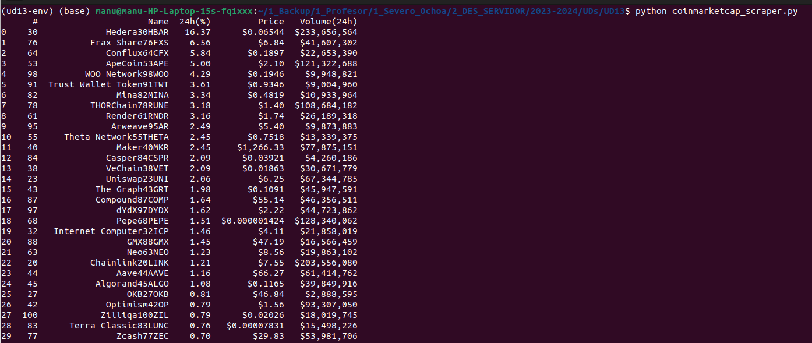
¿Qué más podríamos hacer? Por ejemplo, podríamos tomar el primero de los registros, mediante el método head:
print(dataframe.head(1))
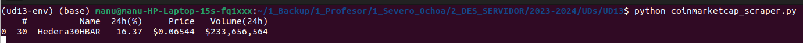
Existe otra librería llamada numpy, muy utilizada conjuntamente con pandas, que da soporte a la creación de vectores y matrices multidimensionales, y una colección de funciones matemáticas.
Esta área es suficientemente extensa como para tratarla en un curso de especialización de FP, como es el del Curso de especialización de Inteligencia Artificial y Big Data.
Consideraciones adicionales¶
Evidentemente, hay más en torno al Web Scraping de lo que se ha detallado hasta ahora. A continuación se presentan más recursos y cuestiones para que amplíes tu visión sobre esta área.
Cheat sheet¶
En este enlace se resumen más tipos de selectores (etiqueta, clase, id, atributo, CSS ...), navegación entre ancestros/descendientes, en BeautifulSoup.
Ejecución en diferentes hilos¶
En el caso en que necesitemos descargar datos de diferentes URLs (como pueda ser el caso de datos paginados en un sitio web), se puede hacer relevante el multiproceso en términos de velocidad.
Para tal fin, es posible utilizar el módulo multiprocessing para agilizar los procesos de Web Scraping desde diferentes URLs. A continuación se proporcionan dos enlaces donde poder consultar diferentes ejemplos:
How to speed up your python web scraper by using multiprocessing
Speed up web scraping using Multiprocessing in Python
Introducción de retardos¶
Las peticiones HTTP que se realizan a un servidor web sobrecargan los recursos del sitio web, con lo cual es conveniente introducir mecanismos que eviten un posible colapso. Para ello, normalmente se suele introducir retardos entre las peticiones HTTP al servidor.
Una primera aproximación podría ser la siguiente:
import time
for term in ["web scraping", "web crawling", "scrape this site"]:
r = requests.get("http://ejemplo.com/search", params=dict(query=term ))
time.sleep(5) # espera 5 segundos
En este caso, se realizarán 3 peticiones HTTP, esperando 5 segundos entre cada una de ellas.
Otra aproximación que se adapta a los tiempos de respuesta del servidor sería la siguiente:
import time
for term in ["scraping", "crawling", "scrape this web"]:
t0 = time.time()
r = requests.get("http://example.com/search", params=dict(query=term))
response_delay = time.time() - t0
time.sleep(10*response_delay)
En este caso medimos el tiempo de respuesta desde que enviamos la petición HTTP hasta que se recibe la respuesta, e introducimos un retardo 10 veces mayor a ese tiempo de respuesta.
Almacenamiento de los datos¶
Los datos obtenidos mediante Web Scraping pueden ser almacenados de multitud de formas para un procesado posterior. En esta sección se presenta la exportación a formato CSV y también el almacenamiento en una base de datos SQLite.
Exportar a CSV¶
Un posible bloque de código para escribir filas en un fichero CSV podría ser el siguiente:
import csv
# ...
with open("ruta_al_fichero/output.csv", "w") as f:
writer = csv.writer(f)
# elementos = [
# ["Producto #1", "$10", "http://example.com/product-1"],
# ["Producto #2", "$25", "http://example.com/product-2"],
# ...
# ]
for elemento in elementos:
writer.writerow(elemento)
Otra posibilidad es guardar las filas como diccionarios de Python. Esto lo conseguiremos con la clase DictWriter, que hará corresponder cada columna del fichero CSV con el nombre de propiedad en la lista de diccionarios:
import csv
# ...
nombre_campos = ["Product Name", "Price", "Detail URL"]
with open("ruta_al_fichero/output.csv", "w") as f:
writer = csv.DictWriter(f, field_names)
# elementos = [
# {
# "Product Name": "Product #1",
# "Price": "$10",
# "Detail URL": "http://example.com/product-1"
# },
# ...
# ]
# Write a header row
writer.writerow({x: x for x in nombre_campos})
for fila in elementos:
writer.writerow(fila)
Almacenar en SQLite¶
Para el caso de almacenaje en una base de datos SQLite, una propuesta de código es la siguiente:
import sqlite3
conn = sqlite3.connect("ruta_al_fichero/output.sqlite")
cur = conn.cursor()
...
for item in collected_items:
cur.execute("INSERT INTO scraped_data (title, price, url) values (?, ?, ?)",
(item["title"], item["price"], item["url"])
)
INTEGRACIÓN CON APIS DE TERCEROS¶
Cada día surgen nuevos servicios web y librerías que nos aportan funcionalidades interesantes para nuestras aplicaciones web. La clasificación se puede hacer extensa, dado el elevado número de posibilidades. A continuación se esbozan algunos ejemplos:
- Geolocalización: Google Maps, OpenStreetMap, OpenLayers, LeafLet (librería JS)
- Envío de e-mails: Mailgun, Mailchimp
- Inteligencia artificial: Azure cognitive services, servicios de IA de AWS
- Pasarelas de pago: Paypal, Stripe
- Servicios en la nube: AWS, DigitalOcean, Linode
Cómo utilizar cada uno de estos servicios depende de cada uno de los proveedores. Normalmente se dispone de abundante documentación, con diferentes posibilidades (mediante endpoints, SDK...).
Lo mejor es probar un ejemplo, y para ello vamos a utilizar un bot de Telegram como una de las actividades de esta unidad.